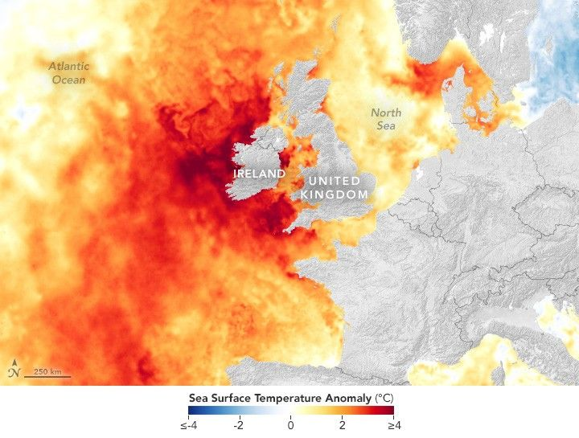

Record Heat in Northwest European Waters
A long-lasting marine heat wave hit the waters surrounding the United Kingdom and Ireland in spring 2025. By mid-May, sea surface temperatures in some areas reached up to 4 degrees Celsius (7 degrees Fahrenheit) warmer than normal. The heat wave began in early March and continued into May, according to the U.K. Met Office, making it one of the region’s longest on record for this time of year.
Persistent high-pressure weather systems throughout the spring produced long spells of sunny, dry, and calm weather—ideal conditions for surface waters to warm, experts noted. Heat from the Sun can build up quickly in the topmost layer of water when winds and waves are too calm to churn up cooler water from below. Throughout April and May, surface water temperatures reached the highest values in satellite records going back to 1982. These conditions followed a winter where sea surface temperatures were already above average.
This map shows temperature anomalies across the water’s surface on May 22, 2025. The values reflect how far temperatures differed from the 2003-2014 average for that day. By this time in the heat wave, temperatures in the North Sea had already peaked, while surface waters west and south of Ireland were hitting some of their highest temperatures of the event so far.
The map is based on data from the Multiscale Ultrahigh Resolution Sea Surface Temperature (MUR SST) project, a Jet Propulsion Laboratory effort that blends measurements of sea surface temperatures from multiple NASA, NOAA, and international satellites, as well as ship and buoy observations.
Marine heat waves can have various effects on ecosystems, including harming fisheries and killing off key species such as kelp. Since the May 2025 heat wave around the U.K. and Ireland occurred before the height of summer, scientists think temperatures will stay low enough to avoid serious harm. However, the unseasonable warmth may still alter the size and timing of phytoplankton blooms, which is consequential because the organisms form the base of the aquatic food web.
The heat associated with these events can extend beyond the ocean to affect weather on land. Researchers analyzing a June 2023 northwest European marine heat wave found that the sea surface heat contributed to a record-high monthly mean temperature in the U.K.
In 2025, spring has been notably warm and dry in the U.K. And to the northwest, across the North Atlantic, Iceland experienced a prolonged spell of temperatures that were well above average in mid-May. Later in the month, however, weather systems brought rain, cooler temperatures, and westerly winds to the region, which the Met Office said may start to break up the warm sea surface layer and allow it to gradually cool.